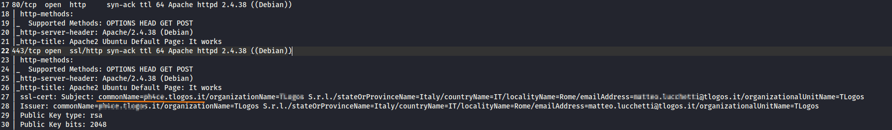

FQDN host (SSL cert)
nmap --script=ssl-cert.nse 10.50.96.5,15 10.50.97.5,6,15

Trovato un FQDN name(commonName) nel certificato SSL cert quindi aggiungo l'inirizzo ip della macchina a /etc/hosts → “192.168.3.138 ph4ce.tlogos.it”